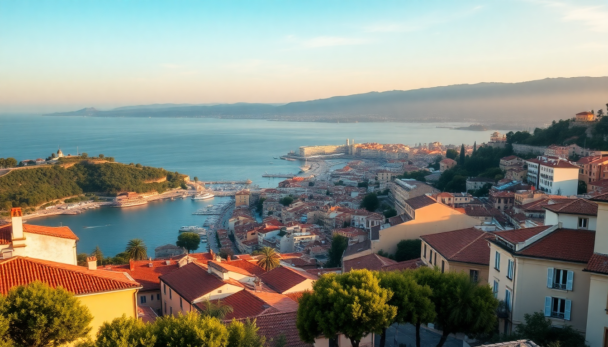

Where to Stay in Nice: Best Neighborhoods for Every Budget

I’ve been to Nice half a dozen times now, and the first thing I tell anyone planning a trip is: don’t just book the cheapest room near the train station. The city is small, but each neighborhood has a completely different vibe — and picking the wrong one can mean a 30-minute walk every time you want a coffee. Here’s where I’ve actually stayed, what I liked (and didn’t), and how to match a neighborhood to your budget.
Is Vieux Nice (Old Town) worth the noise?
If you want to be in the thick of it — markets, bars, and that famous narrow-street energy — Vieux Nice is the spot. I stayed at Hotel de la Mer on Rue de la Poissonnerie last September, and I could hear the morning fish market from my window. The trade-off is noise. Tour groups roll through from 8 AM, and restaurant tables spill into the alleys until midnight.
- Budget pick: Hotel de la Mer — basic but clean, with double rooms around €80-100 in shoulder season.
- Mid-range pick: Hotel Villa Rivoli — quieter side street near Place Garibaldi, still a 5-minute walk to Cours Saleya.
- Splurge pick: Hotel La Pérouse — perched on the castle hill, with sea views and a saltwater pool. Expect €250+.
- Best for: Night owls, solo travelers who want to stumble home from a bar, first-timers who want to feel the pulse.
Where do locals actually live? Le Port
Most tourists skip Le Port because it’s not on the beach. That’s a mistake. I spent three nights here last spring at Hotel Annick & Martin, and it felt like the real Nice — bakeries that aren’t tourist traps, a Saturday morning flea market on Place de l’Île de Beauté, and the best socca I’ve ever had at Chez Pipo (€4 for a plate).
- Budget pick: Hotel Annick & Martin — simple, family-run, doubles from €70.
- Mid-range pick: Hotel Le Petit Nice — boutique, with a rooftop terrace overlooking the port.
- Best for: Couples who want a quiet base, foodies, travelers on a tighter budget who still want charm.
Is the Promenade des Anglais overrated for staying?
The Promenade itself is iconic — you have to walk it at sunset at least once. But I wouldn’t stay directly on it unless you have the budget for a sea-view room. The hotels on the front row are mostly large, dated properties (think Hotel Negresco — a landmark, but rooms start at €400 and the bar drinks are €18). If you want the beach within 30 seconds, try the side streets just behind the Promenade.
- Splurge pick: Hotel Negresco — if you want the Belle Époque experience. Book a sea-view room, not a city-side one.
- Mid-range alternative: Hotel Villa Victoria — two blocks back, with a garden courtyard and doubles around €150.
- Budget alternative: Hotel de France — on Rue de France, a 5-minute walk to the beach, doubles from €90.
- Best for: Beach bums, joggers, anyone who wants to wake up to the Mediterranean.
What about the train station area? (Gare de Nice-Ville)
The area around Gare de Nice-Ville gets a bad rap, and I get it — it’s grimy, with a few dodgy streets. But I’ve stayed there twice when I needed a cheap base for day trips to Monaco or Cannes. The trick is to stay on the east side of the station (Avenue Durante or Rue Paganini) rather than the west side (Rue de la Liberté gets sketchy after dark).
- Budget pick: Hotel Durante — clean, quiet, doubles from €60.
- Mid-range pick: Hotel Le Genève — a 3-star with soundproofed windows, doubles around €100.
- Best for: Solo backpackers, train travelers, anyone on a shoestring who prioritizes transport links over atmosphere.
Which neighborhood is best for families? (Cimiez)
Cimiez is the quiet, leafy hill above the city center. I stayed there once with my sister and her two kids, and it was a lifesaver. The Musée Matisse and the Roman ruins are a 10-minute walk, and the Parc des Arènes de Cimiez has a playground and picnic tables. The downside: you need the bus (#15 or #17) to get down to the beach — about 15 minutes.
- Mid-range pick: Hotel de la Paix — a converted villa with a garden, doubles from €120.
- Splurge pick: Hotel Le Florida — near the museum, with a pool and family suites from €200.
- Best for: Families with young kids, travelers who want peace and green space.
Is Carabacel a good compromise?
Carabacel is the residential zone between the train station and the Promenade. I’ve never stayed here myself, but a friend booked Hotel de la Mer (different from the Vieux Nice one) and loved it. It’s a 10-minute walk to both the beach and the station, with a supermarket and a decent boulangerie on Avenue Malausséna. Not exciting, but practical.
- Budget pick: Hotel de la Mer — basic, but clean and well-located, doubles from €70.
- Best for: Travelers who want a quiet, central base without paying Old Town prices.
FAQ
Is it safe to stay near the train station in Nice? Yes, but with common sense. The area directly around Gare de Nice-Ville has some dodgy corners, especially at night. Stick to the east side (Avenue Durante, Rue Paganini) and avoid the underpass near Rue de la Liberté after dark. I’ve stayed there twice without issues, but I wouldn’t recommend it for solo women late at night.
Which neighborhood is best for nightlife? Vieux Nice, hands down. The bars on Rue de la Préfecture and Rue de la Poissonnerie stay open until 2 AM, and you can find everything from wine bars to loud clubs. If you want something calmer, Le Port has a few good pubs (like Les Distilleries Idéales) with a more local crowd.
Can I walk from the train station to the beach? Yes, it’s a 15-20 minute walk downhill from the station to the Promenade des Anglais. I’ve done it many times with a small roller bag. If you have heavy luggage, take tram line 1 from the station to Masséna for €1.70.
Conclusion
- Vieux Nice is for energy and nightlife — expect noise, but you’re in the heart of it.
- Le Port is the best value for money — local, quiet, and full of good food.
- Promenade des Anglais is for the view — only worth it if you can afford a sea-facing room.
- Gare de Nice-Ville works for tight budgets and train day trips — stay east of the station.
- Cimiez is the family pick — calm, green, and a short bus ride from the beach.